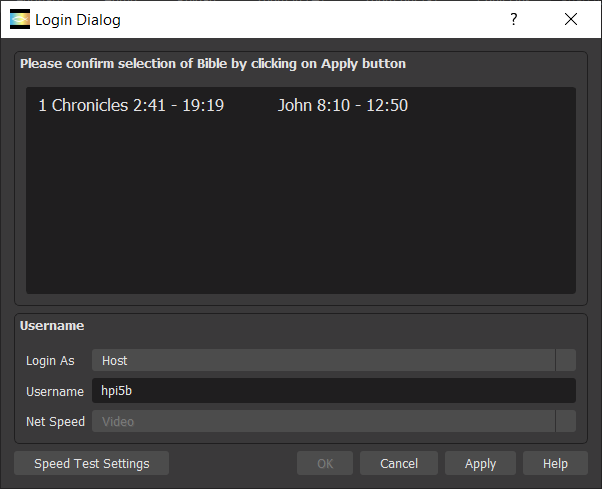
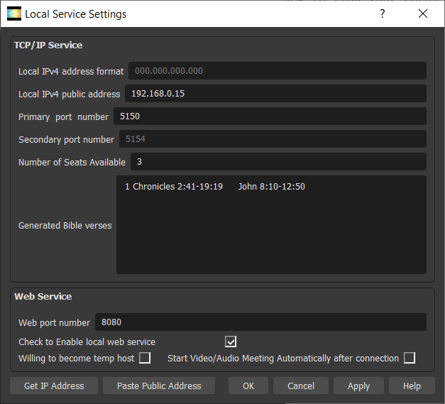

|
|---|
Help Portal
1. About Light Meeting Studio.
Matthew 18:20 "For where two or three come together in my name, there am I with them."
This ongoing project is to develop an internet edge communication software for the Christian Community to have Bible Study and Fellowship online. The main idea is a decentralized Zoom-like meeting of an ultra-light host with a small number of multi-threading clients.
Bible Study: Bible versions of English(NIV) and Chinese(CUVS) are embedded. Other language versions might be supported in the future.
Fellowship: Up to 7 participants per party are supported, with stable communication of two or three parties, depending on the network speed, could support a small fellowship of 10-20 people. Communication is limited to audio, video and text-chatting. More stable participants might be supported in the future.
The latest software releases are English version(1.1.0) and Chinese version(1.1.1).
1.1) How does LMS work?
LMS works for a Host and a small number of Attendees.
Firstly, Host generates a Bible verse based on his Local Service Settings, works as a url for the meeting. The Bible verse looks like: "1 Chronicles 2:41-19:19 John 8:10-12:50".
Secondly, Host initiates the meeting by connecting to the url, and get a Passcode for the meeting from LMS sytem. Host manually sends the Bible verse and Passcode separately to the Attendees using other communication tools such as email or texting. Passcode is a 6-digit number, for example 100227.
Thirdly, each Attendee joins the meeting by connecting to the url - Bible verse and Passcode.
1.2) Communication Structure
LMS has a tree-like communication sturcture, with Host sitting in the top of tree, and the rest of Attendees sitting in the branches of tree, with uppernode and lowernode. Only one person speaks at a time. Normally only Host speaks, and the rest of Attendees could speak through signalling.
1.3) Signalling Sytem: Host/Attendee signals by right-clicking on his rectangle box during the Meeting.
 Host/Attendee Clap: welcome all to the meeting. Shinning Green-Light for a short while, no action required.
Host/Attendee Clap: welcome all to the meeting. Shinning Green-Light for a short while, no action required.
 Attendee Hand Up: the Attendee ask to speak. Still Yellow-Light, notice Host there is some speak request.
Attendee Hand Up: the Attendee ask to speak. Still Yellow-Light, notice Host there is some speak request.
 Host Thumb Up: allow the Attendee to speak. Shinning Red-Light for a short while, notice there will be an Attendee speaking.
Host Thumb Up: allow the Attendee to speak. Shinning Red-Light for a short while, notice there will be an Attendee speaking.
 Attendee Thumb Up: allow Host to speak. Shinning Red-Light for a short while, notice there will be Host speaking again.
Attendee Thumb Up: allow Host to speak. Shinning Red-Light for a short while, notice there will be Host speaking again.
2. Where to download and how to install LMS?
LMS currently supports Windows 10 x64 bit only. Android version will be planned in the near future.
License policy is GNU LESSER GENERAL PUBLIC LICENSE.
You may download LMS in lightmeeting.github.io.
The default installation path of the executable is "C:\Program Files\LM Fellowship\LMS Studio\Release\LMS_Studio.exe",
where "Release" refers to version number, such as 1.0.0 for the first release.
In case you uninstall LMS, the program will be removed, however, your settings data, will remain in the default directory of "C:\Users\Username\AppData\Roaming\LightMeeting",
where "Username" refers to your Windows login name. You might want to remove it manually.
You have to allow its access through Windows firewall.

1) Start Meeting command may be invoked under File menu, or from the center of Control panel.
2) Choose the right Bible-Book-Chapter-Verse, and click on OK button.
3) Login Dialog has two login modes: Host or Attendee.
Choose the right mode, type in Username of your choice, click Apply button.

4) Host mode
Copy Bible verses(1 Chronicles 2:41-19:19 John 8:10-12:50) and Passcode(100227) separately and send to Attendees.

5) Attendee mode
Type in Passcode received.
Settings may be found under File menu.
Currently, English and Chinese are fully supported, and dozens of others languages are partially supported.
1) Local Service Settings is for you to Host the meeting.
Local Service Settings may be found under File menu. If you are only an Attendee, it is optional, and you do not have to setup. You may skip this section 6.
Input Local IPv4 public address, with format XXX.XXX.XXX.XXX(such as 192.168.0.15). See below how to find your Local IPv4 public address.
Input a primary port number, from 1 to 6553(such as 5150).
Secondary port number is automatically generated from the primary port number as 10 * primary + 1.
These two ports are the ports that you will enable your modem to do Port Forwarding later.

2) How to find your Local IPv4 public address?
A) Either click on "Get IP Address" button;
B) Or using your browser, by clicking on the local
or through websites like
https://whatismyipaddress.com/
3) How to enable your modem to do Port Forwarding?
Using your browser, login to your modem, such as
Secondly, add Port Forwarding as below, to forward UDP traffic of primary default port 5150 and secondary default port 51501, to your computer(such as 192.168.0.15). Or you may use other ports of your choice beforehand.
1) Control panel
A) Control panel is the default panel. In the top-left, there is Speaker-preview window.
Before the meeting, Speaker-preview is for you to setup your video. After you adjust your video, you might click on "Fix My Audio/Video" button, to transit your video.
During the meeting, Speaker-preview is for you to setup Speaker's video. After you adjust Speaker's video, you might find it is also adjusted under Meeting panel.
While the Speaker is speaking, if you want to read the Bible verses he refers to, you are able to read your Bible version below Speaker-preview window.
B) Audio: 3 options for audio input
Audio Muted: no audio input.
Microphone: audio input is from your computer default Microphone.
Desktop Audio: audio input is from your computer default Speaker.
C) Video: 5 options for video input
Video Stopped: no video input.
Camera: video input is from Camera of your choice.
Display: video input is from your computer Display monitor of your choice.(Currently only one Display is supported)
Image: static picture input is from your computer Image file of your choice.
Window: video input is from your active Window of your choice.(Yet to be supported)
2) Meeting panel
Meeting panel is the panel used during the meeting. You might be able to see faces of other participants in addition to Speaker.
Under the Meeting panel, Host uses it to coordinate speeches from participants. Host right-clicks on his own rectangle box menu, and chooses an Attendee to talk to the rest of participants.
After the Attendee completes his talk, he might right-clicks on his rectangle box menu, to allow Host to speak. Or Host might right-clicks on his rectangle box menu, to allow Host himself to speak again.
In addition, you are able to do full-screen projector by double-clicking on the rectangle, if you are enjoying the talk of Speaker or want to view his sharing of screen.
3) Bible panel
Bible panel is for you to read your Bible version in a large screen， regardless meeting. Compared to other Bible software, LMS presents Bible by Book instead of Chapter. It gives readers a sense of complete Book, and helps readers to do keyword search easily.
1) Network Speed
Bandwidth conservation is the key for an effective communication. Attendees are encouraged to close their audio/video when Host is speaking.
Default audio speed is 160 bit/s, and default video speed is 400 bit/s, in sum LMS requires at least 70K Byte/s for a basic communication per participant. Up to 7 participants will require 500K Byte/s in one-way, and 1M Byte/s in two-way communication.
2) Communication Order
Current software recommends one person speaks at a time during the meetings.
Normally, only Host talks to the rest of participants.
Under the Meeting panel, Host uses it to coordinate speeches from participants.
Host right-clicks on his own rectangle box menu, and chooses an Attendee to talk to the rest of participants.
After the Attendee completes his talk, he might right-clicks on his rectangle box menu, to allow Host to speak. Or Host might right-clicks on his rectangle box menu, to allow Host himself to speak again.
3) How to fix My video
If LMS is not able to find your camera at first run, and you know you have a Camera. Please reboot the computer, and restart LMS, and you might find your Camera now.
4) How to fix Speaker's video
If the Speaker's video is blurred, right-click on the corresponding rectangle box, and click on the "Restart Player" submenu.
5) How to fix Echo
Double-click on any rectangle box will have its Audio Muted/Unmuted.
You might double-click on your rectangle box to have "Audio Muted" to silence any Echo.
1) Audio/Video Delay
Under normal condition, there are two or three seconds delay. More than 10 seconds of delay might be experienced, depending on network speed.
2) Unreliable communication for three parties
With three parties, sometimes Attendees might not hear Host speaks clearly, under certain network condition.
3) Unreliable communication when an Attendee speaks
With three parties, sometimes other audience might not hear an Attendee speaks, even Host allows him to speak to the audience.
4) Connection problem
Sometimes an Attendee is not able to connect to due to input wrong Bible verse and Passcode.
Sometimes after Attendee sees the login success window, he is still not able to connect to the meeting, due to various problems, including bandwidth constraints. Please wait for a minute or two, restart LMS and try again. Good Luck!